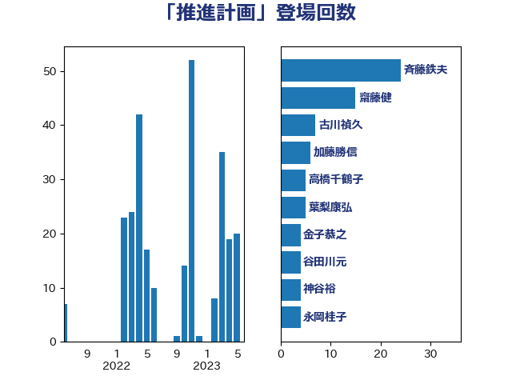

単語「推進計画」

| 斉藤鉄夫 | 公明党 | 24 回 |
| 齋藤健 | 自由民主党 | 15 回 |
| 古川禎久 | 自由民主党 | 7 回 |
| 加藤勝信 | 自由民主党 | 6 回 |
| 高橋千鶴子 | 日本共産党 | 5 回 |
| 葉梨康弘 | 自由民主党 | 5 回 |
| 金子恭之 | 自由民主党 | 4 回 |
| 谷田川元 | 立憲民主党 | 4 回 |
| 神谷裕 | 立憲民主党 | 4 回 |
| 永岡桂子 | 自由民主党 | 4 回 |
| 日下正喜 | 公明党 | 4 回 |
| 大口善徳 | 公明党 | 4 回 |
| 保岡宏武 | 自由民主党 | 4 回 |
| 高橋光男 | 公明党 | 3 回 |
| 鈴木庸介 | 立憲民主党 | 3 回 |
| 後藤茂之 | 自由民主党 | 3 回 |
| 鳩山二郎 | 自由民主党 | 2 回 |
| 鬼木誠 | 立憲民主党 | 2 回 |
| 門山宏哲 | 自由民主党 | 2 回 |
| 長谷川英晴 | 自由民主党 | 2 回 |
| 紙智子 | 日本共産党 | 2 回 |
| 稲富修二 | 立憲民主党 | 2 回 |
| 神津たけし | 立憲民主党 | 2 回 |
| 田村智子 | 日本共産党 | 2 回 |
| 田中昌史 | 自由民主党 | 2 回 |
| 森屋隆 | 立憲民主党 | 2 回 |
| 岡田直樹 | 自由民主党 | 2 回 |
| 寺田稔 | 自由民主党 | 2 回 |
| 宮崎雅夫 | 自由民主党 | 2 回 |
| 塩田博昭 | 公明党 | 2 回 |
| 嘉田由紀子 | 無所属 | 2 回 |
| 加藤鮎子 | 自由民主党 | 2 回 |
| 中川康洋 | 公明党 | 2 回 |
| 下野六太 | 公明党 | 2 回 |
| たがや亮 | れいわ新選組 | 2 回 |
| 長浜博行 | 無所属 | 1 回 |
| 鈴木敦 | 国民民主党 | 1 回 |
| 鈴木俊一 | 自由民主党 | 1 回 |
| 野田聖子 | 自由民主党 | 1 回 |
| 野上浩太郎 | 自由民主党 | 1 回 |
| 赤池誠章 | 自由民主党 | 1 回 |
| 赤松健 | 自由民主党 | 1 回 |
| 西岡秀子 | 国民民主党 | 1 回 |
| 蓮舫 | 立憲民主党 | 1 回 |
| 萩生田光一 | 自由民主党 | 1 回 |
| 菊田真紀子 | 立憲民主党 | 1 回 |
| 緑川貴士 | 立憲民主党 | 1 回 |
| 細田健一 | 自由民主党 | 1 回 |
| 石井苗子 | 日本維新の会 | 1 回 |
| 石井浩郎 | 自由民主党 | 1 回 |
| 石井拓 | 自由民主党 | 1 回 |
| 田村まみ | 国民民主党 | 1 回 |
| 猪瀬直樹 | 日本維新の会 | 1 回 |
| 牧義夫 | 立憲民主党 | 1 回 |
| 牧島かれん | 自由民主党 | 1 回 |
| 熊田裕通 | 自由民主党 | 1 回 |
| 渡辺孝一 | 自由民主党 | 1 回 |
| 渡辺周 | 立憲民主党 | 1 回 |
| 櫛渕万里 | れいわ新選組 | 1 回 |
| 榛葉賀津也 | 国民民主党 | 1 回 |
| 松川るい | 自由民主党 | 1 回 |
| 本田顕子 | 自由民主党 | 1 回 |
| 木原稔 | 自由民主党 | 1 回 |
| 早坂敦 | 日本維新の会 | 1 回 |
| 工藤彰三 | 自由民主党 | 1 回 |
| 川田龍平 | 立憲民主党 | 1 回 |
| 島村大 | 自由民主党 | 1 回 |
| 山本佐知子 | 自由民主党 | 1 回 |
| 大石あきこ | れいわ新選組 | 1 回 |
| 城井崇 | 立憲民主党 | 1 回 |
| 土屋品子 | 自由民主党 | 1 回 |
| 和田義明 | 自由民主党 | 1 回 |
| 佐藤正久 | 自由民主党 | 1 回 |
| 伊藤岳 | 日本共産党 | 1 回 |
| 三浦信祐 | 公明党 | 1 回 |